The Companion, a second pass
Six screens, photographed from the simulator against the demo library, and what would make them read as Blunderbase without dressing them up. Every proposal is drawn in the app's own tokens from Theme.swift, so nothing here needs a colour the app does not already have.
Why it reads as bland. Every screen is a stock iOS template: a centred inline title, a pill search field, a grouped form, three identical bordered cards in a row. The parts that are unmistakably Blunderbase — the drop in win percentage, the ?? glyphs, the eval stamp, the scoresheet dot for a colour — are all there, but they sit at the same volume as the chrome around them. Nothing in the chrome says whose app this is.
The fix is not more styling. The web app settled this a week ago with the restrained desktop pass: panes bounded by rules rather than floating cards, sections as a heading over a rule, a muted accent that means something when it appears. The phone should inherit those four habits and stop there. Below, each proposal names its size so the list can be cut.
SF for people and prose, mono for anything that is a fact: ratings, clocks, dates, counts, moves. Already half true; make it the rule, and the mono line under a title becomes the app's signature.
A region is a heading over a rule and a change of surface. The bordered rounded card is spent only on the thing that floats, which on a phone is a worst-moment tile and nothing else.
Blue is for a selected filter, a to-move ring, a tab. It is not the colour of every game name on the notes screen. Fewer blues, and the one that is left reads.
The filled and hollow disc for White and Black already lives on the game screen. Carry it into the rows, where the bold name currently says who you were but not which colour.
Large title, sections over rules, no card borders
RecommendedThe sentence under the title is the best copy in the app and it is set like a placeholder. The three rating cards are the template look: same border, same radius, chart floating in a box. Take the boxes away and each speed becomes a sub-heading over a hairline with its numbers on the same line, which is how the web draws it and how the eye already reads it. The window control turns into text segments in the section head, as in the web's Ratings section.
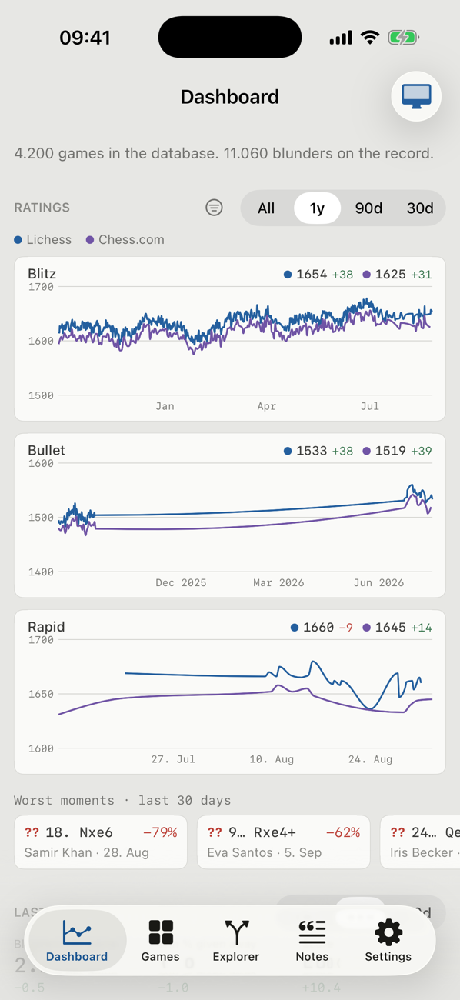
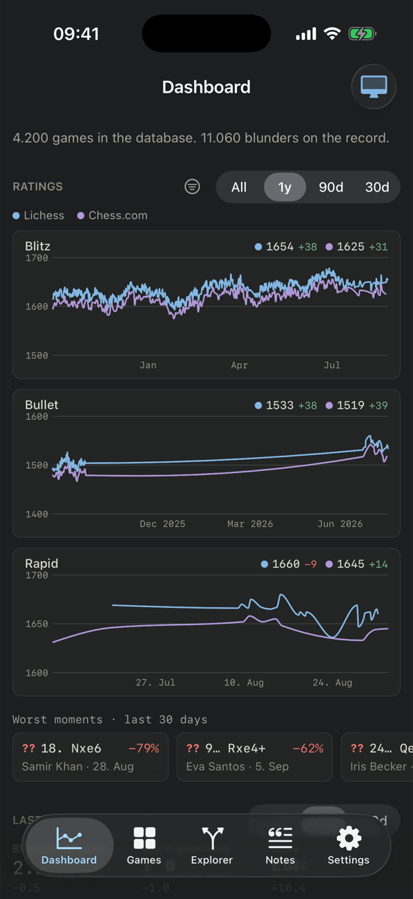
Dashboard
- 1aLarge left-aligned title with the count line in mono under it.
.navigationBarTitleDisplayMode(.large)plus a two-number line replacing the sentence. The same treatment on Games, Explorer, Notes and Settings, so the five tabs share one head.S - 1bSection head as heading over an
edgeStrongrule; the window control moves into the head as text segments; the speeds menu stays as the icon.S - 1cPer-speed: drop the card background and border, keep a
hairlineunder the name-and-numbers line, emphasise the last point of each series with a dot. The chart itself is untouched.S - 1dWorst moments keep their tiles: they are the one thing on the screen that should float, and the glyph goes bold so a tile reads as a verdict. The three period numbers become one row of figures with their label above, tabular.S
The colour dot, a result chip, and dates as rules
RecommendedThe rows are right and should stay two lines with the same order as the web card. Three things would make the list feel authored rather than generated. The side dot before your name says which colour you had, which the bold name alone does not. The result becomes a small filled chip in the outcome's colour, so a scan down the right edge reads wins and losses as shapes and not only as tinted digits. And since the list is in date order and the date repeats three or four times per screen, cut it into date rules the way the notes screen does on the web, which frees line two for the time control, the length and the source. The orphan 4.200 games strip is folded into the search placeholder.
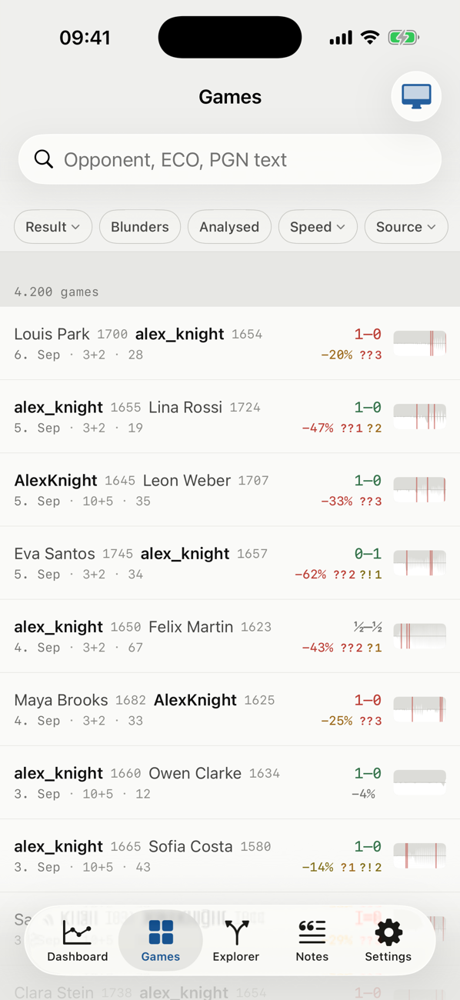
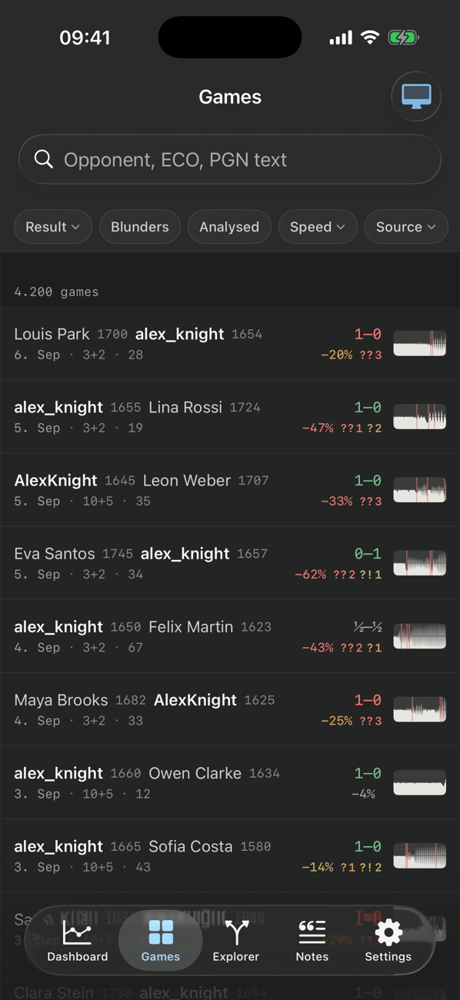
Games
- 2aSide dot before the owner's name, the
PlayerRowdisc at 9pt. With no owner in the game (a reference game) there is no dot, which is the truth about it.S - 2bResult as a chip:
chipGoodfor a win, a newchipBadpair for a loss (the web has none yet; add it toindex.cssat the same time so the token list stays shared),elevatedfor a draw. Same outcome colours as now, just with a ground.S - 2cDate rules: a mono day label over a hairline, sections in the
List. Line two then reads "3+2 · 28 moves · Lichess". The stamp's area fill goes from none toelevatedso it reads as a shape rather than a scribble.M - 2dSearch field as a 10pt-radius rectangle, chips as 6pt-radius rectangles with an edge, an active chip on
selected. The pill shapes are the template's; the web's radius scale is the app's.S - 2eThe count strip goes: the total sits under the large title and, once a filter is on, in the search placeholder ("Search 312 games").S
Opening at full width, result with the players
RecommendedThree stacked things above the board today: the navigation bar with a centred two-line title that truncates every opening longer than "Sicilian", a players strip that floats without touching either neighbour, and then the board. The result lives in the 10pt subtitle, which is the wrong place for the one fact everyone looks for first. The glass back button and the glass pill are iOS 26's, fine, but they make a centred title between them look like a third pill.
Scoresheet. Empty the bar's centre and let the two glass controls stand alone. Under it a header on surface, rule above and below: the opening name at full width on one line with the ECO as a chip, a mono line for time control, source and date, and the players facing each other across the result instead of a hairline. The clocks stay bound to the cursor where they are. Height is within four points of today.
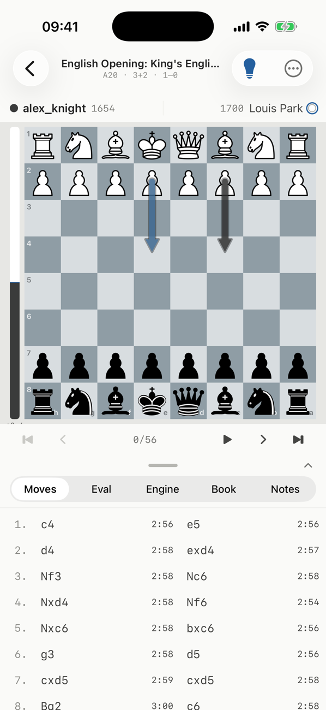
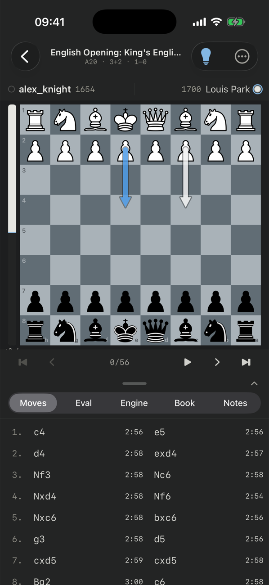
- 3aRemove the
.principaltoolbar item; the two-line title becomes the header block under the bar. The header is one view,GameHeader, that ownsPlayersRow.M - 3bThe result chip sits between the halves, in the owner's colour:
chipGoodwhen they won,chipBadwhen they lost, neutral for a draw or a game they did not play.S - 3cThe ECO as a chip on the right of the name line, the time control, source and date in the mono line. A game with no opening name shows "Game" and nothing else changes.S
- 3dThe header is a light-weight
surfacepane with a hairline above and below, so the bar, the header and the board are three distinct bands rather than one grey field with things floating in it.S
Lean: the players are the title
OptionalIf the goal is board height rather than reading, put the players strip in the navigation bar's centre and move the opening down to where it belongs, as the first line of the Moves pane. The board gains 34 points and the screen is the bar and the board with nothing in between. The cost is that the names get about 190 points between the two glass controls and truncate sooner, and a two-line bar title is small. Worth trying only if the board feels cramped in practice.
Quieter context line, date rules
RecommendedEvery note opens with a line of accent-blue mono. Ten of them on a screen and the accent stops meaning anything, and the note's own words, the thing the person wrote, come second visually. Swap the voices: the context line in dim with the disc for the colour and the move in body, the note text in the app's text colour, the tags as edged chips. Group by date the way the web does, so a note without a game (the training plan) sits under its day instead of looking like a stray.
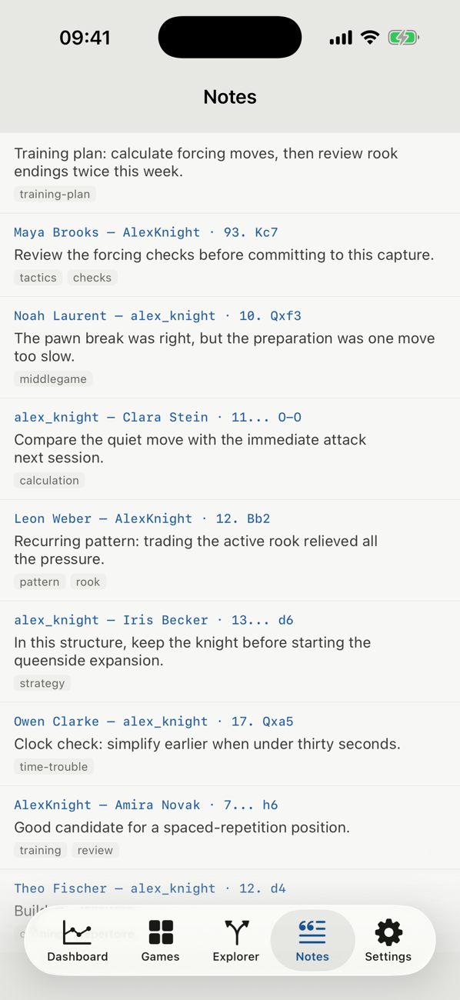
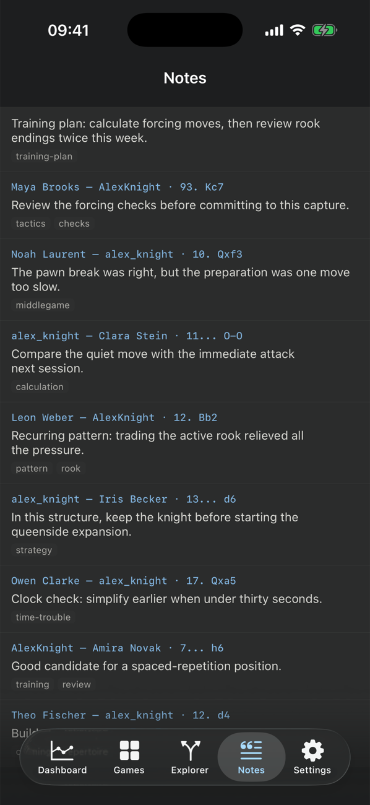
Notes
- 4aContext line: colour disc, names in
dim, move inbodysemibold, all mono at 12pt. A note with no game says "General".S - 4bDate rules as on Games, with "Today" and "Yesterday" as words. Same
daterulecomponent in both lists.S - 4cTags as 4pt-radius chips with an
edge, onelevated; the count line under the large title.S
Thinner bars, the line as a line
SmallThe explorer is the screen that already looks most like its own thing, because the board is doing the work. Two small moves. The split bars are the heaviest element on the screen at 8 points and saturated green-to-red; at 6 points on the track they read as data rather than as a progress bar. And "Starting position" is a label for a state; once moves are played, that strip should say the line in mono, which is what the web's explorer shows and what someone quotes to a friend.
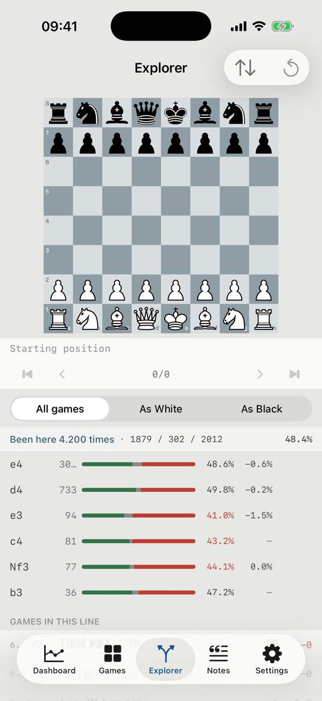
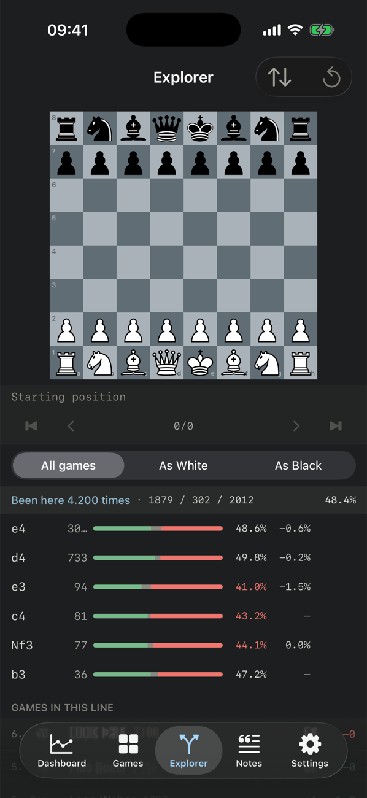
- 5aThe strip under the board carries the moves played so far in mono, opening name after a dot in
faint; "Starting position" only at ply 0.S - 5bBars at 6pt on
track; the header line's three counts get their own colour squares so the bar's legend is on the screen.S
The one place for the brand
SmallSettings is a grouped form and should stay one; nobody wants a designed settings screen. It is also the only screen where the app can say its own name without it being noise. A footer with the pawn-robot mark, the app's name and version, and the server it is reading with a green dot for connected, puts the identity in the one place someone looks for it. The server row itself keeps its mono value.
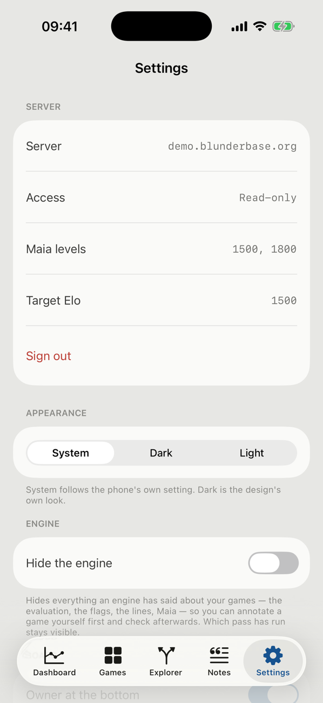
- 6aFooter: the logo from
docs/design/brand(inverted in the dark theme as the web does), name and version from the bundle, server and access fromSession. Large title as on the other tabs.S
If it were one afternoon
The proposals stack. The first row changes the feel of the whole app on its own, and the game header is the one the owner asked for; everything after that is a screen at a time.
| Step | What | Touches | Size |
|---|---|---|---|
| 1 | Large titles with the mono count line on all five tabs; section heads over rules; chips and fields on the radius scale. | RootView, each tab's header, a shared SectionHead | S |
| 2 | Game header: Scoresheet. | GameDetailView toolbar, PlayerRow, a new GameHeader | M |
| 3 | Games rows: side dot, result chip, sparkline fill. | GameRowView, Sparkline, Theme (chipBad) | S |
| 4 | Dashboard: cards to sections, endpoint dots, stats row. | DashboardView | S |
| 5 | Date rules on Games and Notes; the notes context line. | GamesListView, NotesListView, a shared DateRule | M |
| 6 | Explorer strip and bars; Settings footer. | ExplorerView, SettingsView | S |